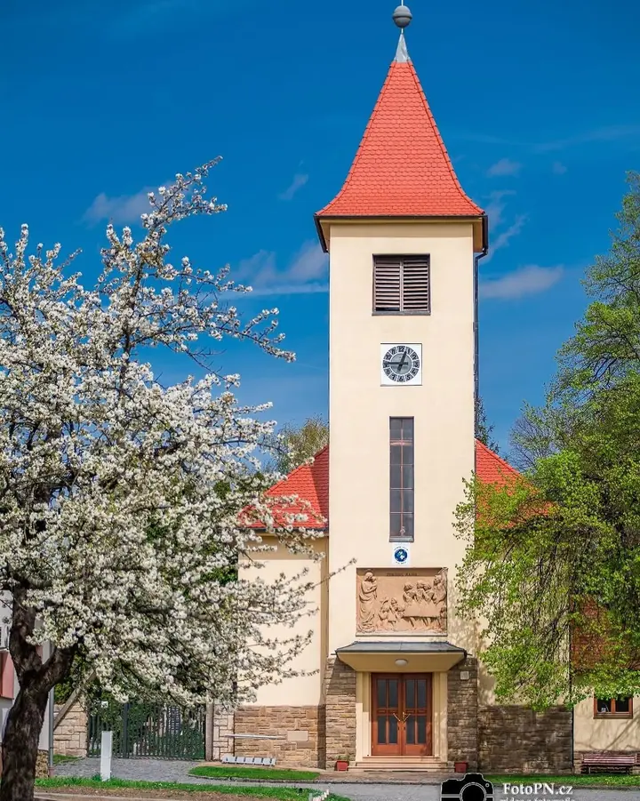
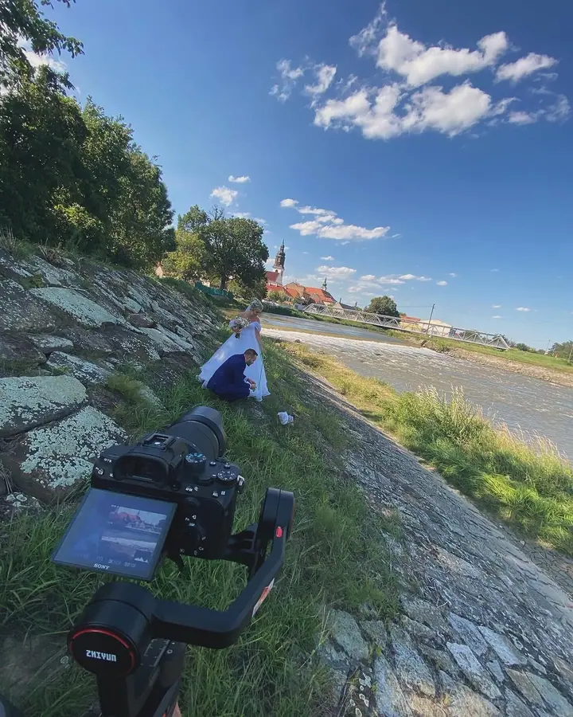
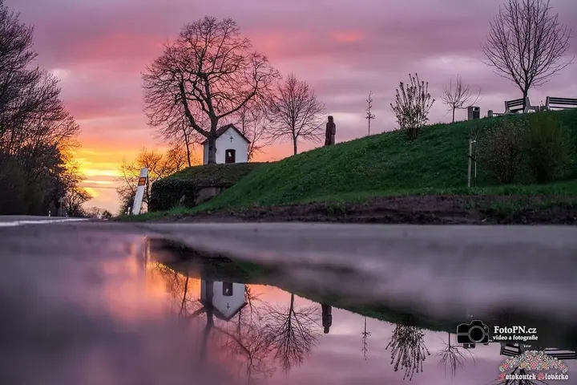
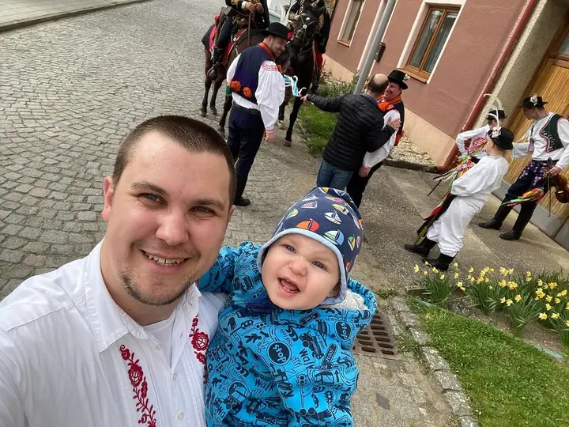

01 / 03
Svatební foto a video
Celý svatební den nafotím a natočím, od obřadu po večerní zábavu. Fotky i klip máte od jednoho dodavatele.
Zeptat se na termín→



Svatby na Slovácku ve fotce i videu
Zeptat se na termín →(01) Ahoj
Jmenuji se Nedoma a pod značkou FotoPN.cz fotím a točím svatby i další akce na Slovácku. Na oslavy a plesy vozím fotokoutek , ze kterého si hosté odnesou vytištěné fotky. Ve volných chvílích fotím krajinu za soumraku a noční oblohu.
136příspěvků s fotkami a příběhy
(02) Co dělám
01 / 03
Celý svatební den nafotím a natočím, od obřadu po večerní zábavu. Fotky i klip máte od jednoho dodavatele.
Zeptat se na termín→02 / 03
Na svatbu, ples nebo firemní večírek přivezu fotokoutek s pozadím a světlem. Hosté si fotky odnesou vytištěné hned na místě.
Zeptat se na termín→03 / 03
Točím krátké klipy z akcí, koncertů a událostí. Hodí se na sociální sítě i jako vzpomínka.
Zeptat se na termín→(04) Postup
Od první zprávy po hotovou galerii.
Krok 1 z 4
Napište mi termín, místo a jestli chcete fotky, video nebo fotokoutek. Ověřím, že mám volno.
Krok 2 z 4
Probereme průběh dne, místa a co je pro vás důležité, aby na fotkách i ve videu nic nechybělo.
Krok 3 z 4
Přijedu s foťákem, kamerou nebo fotokoutkem a fotím a točím tak, abyste se mohli věnovat svým hostům.
Krok 4 z 4
Fotky upravím, video sestříhám a pošlu vám je. Z fotokoutku si hosté odnášejí fotky hned na místě.
Slovácko mám v každé fotce
(05) Za objektivem
Fotím a točím už dvanáctým rokem. Začínal jsem u fotek, postupně přibyla kamera, gimbal a klipy, takže dnes můžete mít svatbu nafocenou i natočenou od jednoho člověka.
Jsem ze Slovácka a je to na mých fotkách vidět. Hody, kroje, kapličky v polích a kostely v rozkvetlých zahradách mě baví stejně jako samotné svatby.
Kromě svateb provozuji Fotokoutek Slovácko. Postavím pozadí a světlo, hosté se vyfotí a fotky si hned odnesou vytištěné. Na plesech a svatbách to bývá místo, kde se lidé nejvíc nasmějí.
Nedoma
Nedoma · Svatební fotograf a kameraman
Ano, svatby fotím i natáčím. Napište mi, co přesně si představujete, a domluvíme rozsah.
Na místě postavím pozadí se světlem, hosté se vyfotí a fotky se jim rovnou vytisknou. Hodí se na svatby, plesy i firemní akce.
Hlavně na Slovácku a v okolí. Pokud je vaše svatba nebo akce jinde, napište, rád se domluvím.
Cena záleží na délce akce a na tom, jestli chcete fotky, video nebo fotokoutek. Pošlete mi termín a místo a připravím vám nabídku.
(07) Kontakt
Napište pár vět o tom, co si představujete, a termín, který se vám hodí.
fotopn@seznam.cz